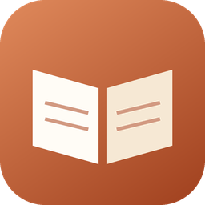

PáginasPágina inicial
Termos de Uso
Última atualização: 8 de novembro de 2026.
1. O que é o Páginas
O Páginas é um aplicativo gratuito para criar o hábito de leitura e ler livros em domínio público. Ao usá-lo, você concorda com estes termos.
2. Livros
Os livros da biblioteca virtual vêm do Projeto Gutenberg e estão em domínio público nos Estados Unidos. A situação de direitos autorais pode ser diferente em outros países; a responsabilidade pelo uso é de quem lê.
3. Inteligência artificial
As explicações da IA podem conter erros. Use-as como apoio à leitura, não como fonte definitiva. O uso da IA tem limite de pedidos por minuto para manter o serviço gratuito.
4. Sem garantias
O app é oferecido como está, sem garantias. Faça backups em Ajustes > Seus dados ou use a conta Google para guardar uma cópia.